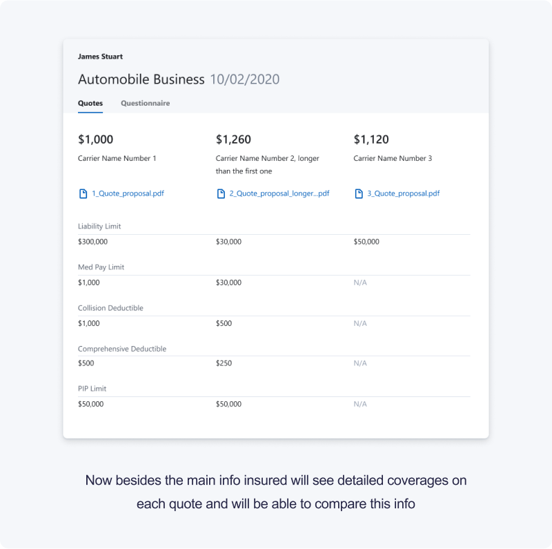
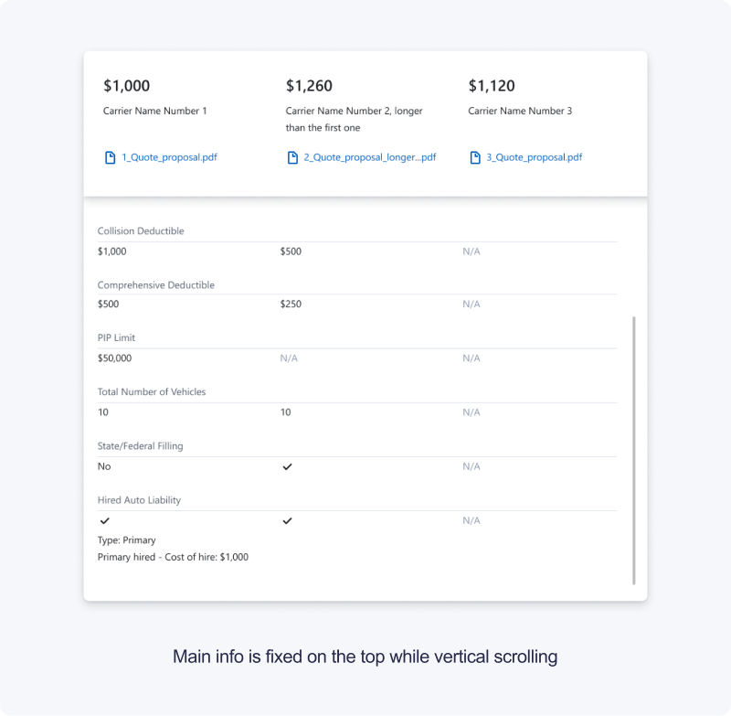

Quote comparison
Jul-Aug 2020
The cost of insurance and its coverage is the first thing the agent should agree with the client. To make it convenient to compare quotes, we made a page with all the necessary information.
User research ✷ Information architecture ✷ UI design
➀ Context
Agents submit to several markets and receive offers on the price of insurance inside the product. Then they need to present it to an insured. Insured will decide which quote is better.
➁ Problem
Agents have to manually transfer data about quotes from the product to Excel. This is an extra work that the product can do.
User problem
I need to send quotes to my client and I have to spend too much time to fill the table with data from pdf files and Appulate.
Business problem
If we can’t provide an end-to-end communication for agent and insured, our users will switch to our competitors.
➂ Research
First, we talked with agents and understand what kind of data they need to present.
Except for the actual cost and document of the policy, agents needed to describe details such as limits, deductibles, and coverages.
The data between the offers even in the one insurance line can be very different due to the companies settings. We needed сollect all datasets in one place.
➃ Solution
We have a special portal for insureds where all quotes and policies are stored. We built a table into the portal so the insured would have all the data in one place and agents just needed to share this page with insured.
 
➄ Outcomes
This page was an important step in the growth of the Insured portal which is one of the main parts of business focus. According to the qualitative data, we see that agents and insured are interested in this page. But also we knew that there are some problems with inviting clients to the Insured portal. So for the next iteration, we decided to rethink sharing process.